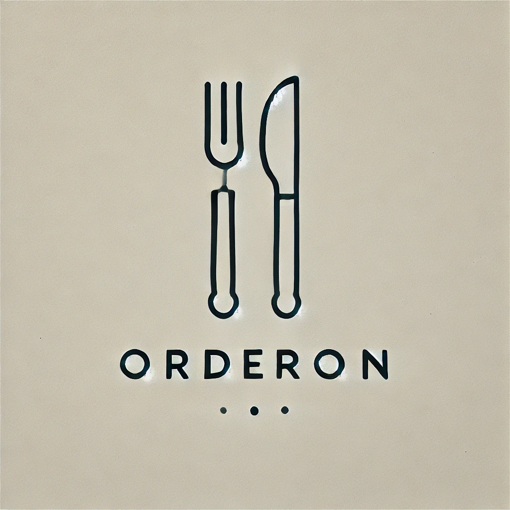

<ion-header [translucent]="true">
  <ion-toolbar>
    <ion-title>Login</ion-title>
  </ion-toolbar>
</ion-header>

<ion-content [fullscreen]="true" class="ion-padding">
  <!-- Contenedor que centraliza la imagen -->
  <div style="display: flex; justify-content: center; align-items: center; height: 40vh;">
    
  </div>
  
  <ion-item>
    <ion-input [(ngModel)]="mdl_user" label="Usuario" labelPlacement="floating" placeholder="Ingrese su Usuario"></ion-input>
  </ion-item>
  <ion-item>
    <ion-input [(ngModel)]="mdl_pass" type="password" label="Contraseña" labelPlacement="floating" placeholder="Ingrese su Contraseña"></ion-input>
  </ion-item>
  
  <ion-button (click)="navegar()" expand="block" color="danger"> Ingresar </ion-button>
  <ion-button fill="clear" expand="block" (click)="navegarRegistro()">Crear Cuenta</ion-button>
</ion-content>
